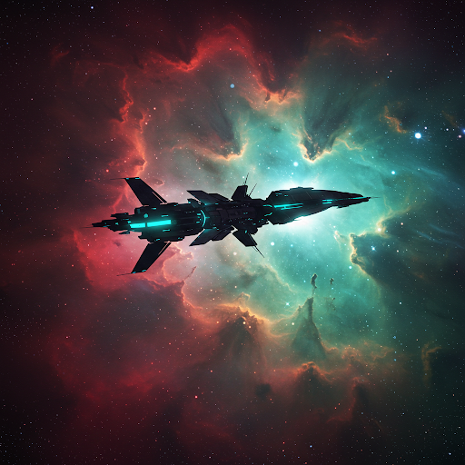

Introduction
Space exploration is the investigation of outer space through human and robotic spaceflight. It has led to significant advancements in science, technology, and our understanding of the universe.
History of Space Exploration
The first artificial satellite, Sputnik 1, was launched by the Soviet Union in 1957. This was followed by human spaceflight with Yuri Gagarin in 1961 and the Apollo 11 moon landing in 1969. Since then, space agencies like NASA, ESA, and private companies have expanded our reach into space.
Technologies Used
- Rockets: Powerful launch vehicles that carry spacecraft beyond Earth's atmosphere.
- Space Probes: Unmanned spacecraft sent to explore distant planets and asteroids.
- Satellites: Used for communication, weather forecasting, and Earth observation.
- Space Stations: Orbital research facilities like the International Space Station (ISS).
Benefits of Space Exploration
- Advances scientific knowledge and our understanding of the cosmos.
- Develops new technologies with applications in medicine, transportation, and communication.
- Encourages international cooperation and innovation.
- Inspires future generations to pursue careers in science and engineering.
Challenges and Future
- Cost: Space missions are expensive and require significant funding.
- Space Debris: Growing amounts of debris pose risks to satellites and space stations.
- Human Safety: Long-duration missions expose astronauts to radiation and other health risks.
- Interplanetary Exploration: Efforts to reach Mars and beyond require further technological advancements.
Conclusion
Space exploration continues to push the boundaries of human knowledge and capability. With ongoing research and collaboration, humanity is poised to explore new frontiers beyond our solar system.
